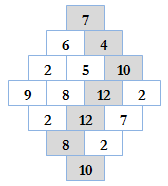

Question Code : 1004
Problem Name : Problem 1004 - Monkey Banana Problem
Problem Tags :
Dynamic Programming
Problem Statement :
You are in the world of mathematics to solve the great "Monkey Banana Problem". It states that, a monkey enters into a diamond shaped two dimensional array and can jump in any of the adjacent cells down from its current position (see figure). While moving from one cell to another, the monkey eats all the bananas kept in that cell. The monkey enters into the array from the upper part and goes out through the lower part. Find the maximum number of bananas the monkey can eat.

Code :
#include <bits/stdc++.h>
using namespace std;
#define pii pair<int,int>
#define vi vector<int>
#define vii vector < pii >
#define si set<int>
#define ll long long int
#define pb push_back
#define mp make_pair
#define fr first
#define se second
#define MOD 1000003
#define MAX 10100
int main ()
{
//cout << setprecision(7) << fixed;
#ifndef ONLINE_JUDGE
freopen("input.txt","r",stdin);
#endif
int t;
scanf("%d",&t);
int cas=1;
while (t--){
//cout<<"Case "<<cas++<<": ";
printf("Case %d: ",cas++);
int n;
scanf("%d",&n);
int a[n*2-1][n];
int ans[n*2-1][n];
for (int i=0;i<n;i++){
for (int j=0;j<=i;j++){
scanf("%d",&a[i][j]);
}
}
for (int i=n,k=n-1;i<2*n-1;i++,k--){
for (int j=0;j<k;j++){
scanf("%d",&a[i][j]);
}
}
ans[0][0] = a[0][0];
for (int i=1;i<n;i++){
for (int j=0;j<=i;j++){
if (j==0){
ans[i][j] = ans[i-1][j]+a[i][j];
}
else if (j==i){
ans[i][j] = ans[i-1][j-1]+a[i][j];
}
else{
ans[i][j] = max(ans[i-1][j-1],ans[i-1][j])+a[i][j];
}
//cout<<ans[i][j]<<" ";
}
//cout<<endl;
}
for (int i=n,k=n-1;i<2*n-1;i++,k--){
for (int j=0;j<k;j++){
ans[i][j] = max(ans[i-1][j],ans[i-1][j+1])+a[i][j];
}
}
//cout<<endl;
printf("%d\n",ans[2*n-2][0]);
}
return 0;
}